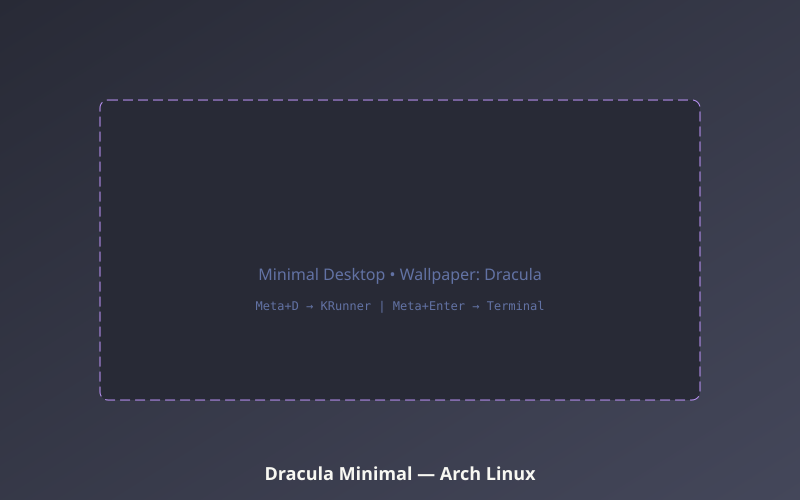
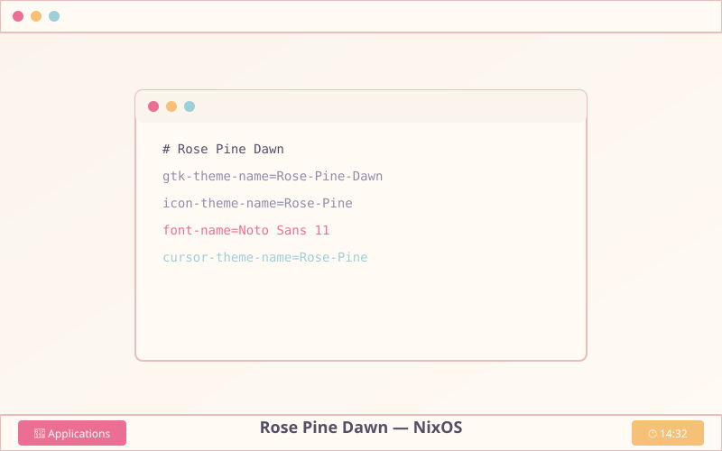
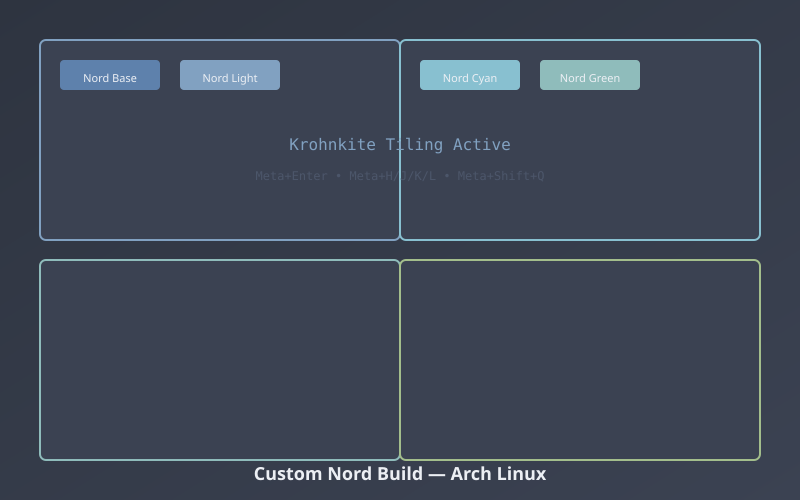
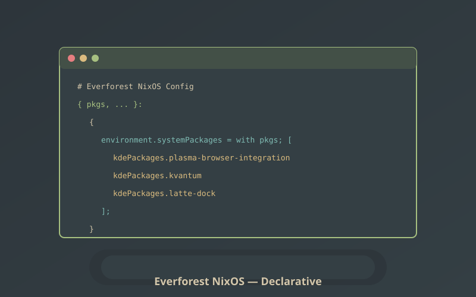

Nordic Minimal
Clean Nordic theme with Latte Dock, minimal panel, and krohnkite tiling
Community showcase of riced KDE Plasma desktops
Clean Nordic theme with Latte Dock, minimal panel, and krohnkite tiling

Declarative NixOS config with Bismuth tiling, Catppuccin Mocha, and Home Manager

Warm Gruvbox colors with custom Latte Dock layout, Kvantum theming

Pure Wayland session with Tokyo Night, custom KWin effects

Classic Dracula theme with hidden panel, KRunner-only workflow

Light Rose Pine variant with traditional panel layout

Hand-crafted Nord variant with custom color scheme, Krohnkite

Everforest theme ported to KDE with Latte Dock, declarative config